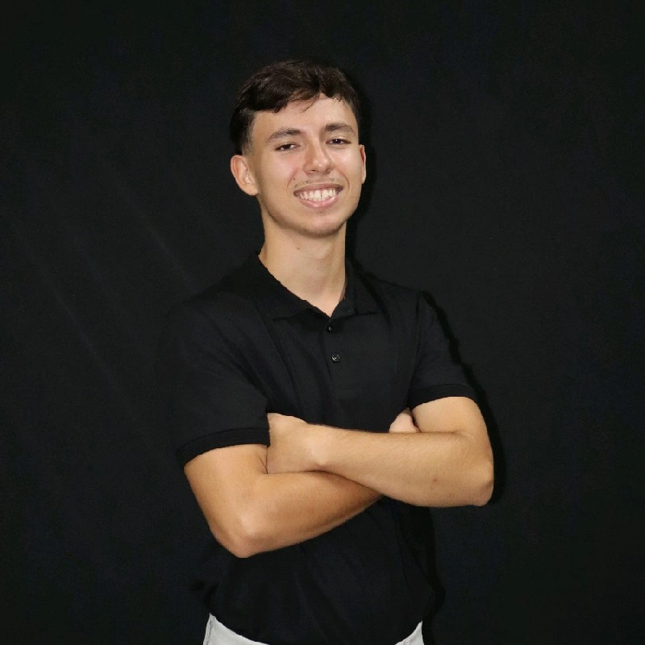

Sobre Mim
Olá! O meu nome é Lucas Agra de Oliveira Moraes. Sou morador em Brasília-DF e estou atualmente a construir a minha trajetória académica na área da tecnologia através de uma dupla licenciatura.

O meu objetivo profissional é obter um estágio na área de Ciência da Computação e Tecnologia da Informação, desenvolvendo as minhas competências e colaborando em projetos reais.
Formação Académica
-
Engenharia de Software — Universidade de Brasília (UnB)
1.º Semestre (Diurno) | Previsão de conclusão: Junho de 2030 -
Ciência da Computação — Centro Universitário de Brasília (CEUB)
2.º Semestre (Matutino) | Previsão de conclusão: Dezembro de 2029 - Ensino Secundário Completo — Instituto Educacional Santo Elias (IESE)
Conhecimentos Técnicos
- Programação C / C++: Avançado
- Java: Intermediário
- Bases de Dados: MySQL e SQL (Básico)
- Produtividade & Design: Pacote Office e Canva (Avançado)
- Hardware: Montagem e manutenção de computadores (Básico)
Formação Complementar & Certificações
- Fundamentos do Hardware do Computador — Cisco Networking Academy (Concluído em 2026)
- Curso de Inglês — PL Idiomas (Concluído em 2026)
- Programação Básica — Instituto Educacional Santo Elias (40 horas, 2023)
Idiomas
- Inglês: Avançado
- Espanhol: Intermediário
Habilidades Profissionais
- Trabalho em equipa
- Responsabilidade com prazos
- Atendimento ao utilizador
- Facilidade de aprendizagem
- Resolução de problemas
- Proatividade